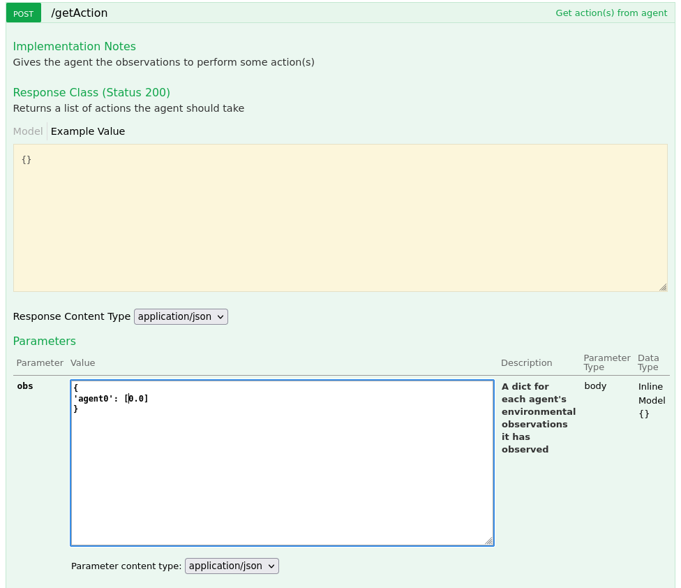

Testing
Running the Agent
All agents are ultimately run as web services with endpoints corresponding to the implemented AbstractAgent methods. The model endpoint service is supplied by the mistk.agent module. To run the model endpoint service, call:
python -m mistk.agent [module] [class] [port, optional]
where ‘module’ is the python module being loaded and ‘class’ is the class which implements AbstractAgent as described above. This will start the endpoint service listening on the localhost at the specified ‘port’, which defaults to 8081. You can view the endpoint API by accessing http://localhost:{port}/v1/mistk/agent/ui/.
You must ensure that the module files are on the PYTHONPATH or are executing the command in the agent’s project base directory. An example of executing the test random agent previously referenced:
python -m mistk.agent test_agent.agent TestAgent 8081
You can then use the UI to manually kick off instructions to the agent.
You should also be able to access the Agent Instance Endpoint Swagger UI through web browser at http://localhost:{port}/v1/mistk/agent/ui/
Agent testing through the RESTful API
The RESTful API for a running model can be accessed at http://localhost:{port}/v1/mistk/agent/ui/. The RESTful API endpoints correspond to the Pythonic API endpoints (ie. MISTK agent methods beginning with ‘do_’) in terms of their input parameters and return values. The primary difference is that parameter names are in camelcase format rather than underscored (ie. modelProperties vs. model_properties). The API method call example below include sample input arguments when running the test agent.
Initialize
Build Model
Get Action
Running the Orchestrator
All orchestrators are ultimately run as web services with endpoints corresponding to the implemented AbstractOrchestrator methods. The model endpoint service is supplied by the mistk.orchestrator module. To run the model endpoint service, call:
python -m mistk.orchestrator [module] [class] [port, optional]
where ‘module’ is the python module being loaded and ‘class’ is the class which implements AbstractOrchestrator as described above. This will start the endpoint service listening on the localhost at the specified ‘port’, which defaults to 8080. You can view the endpoint API by accessing http://localhost:{port}/v1/mistk/orchestrator/ui/.
You must ensure that the module files are on the PYTHONPATH or are executing the command in the agent’s project base directory. An example of executing the test orchestrator previously referenced:
python -m mistk.orchestrator test_orchestrator.orchestrator TestOrchestrator 8080
You can then use the UI to manually kick off instructions to the orchestrator.
You should also be able to access the Agent Instance Endpoint Swagger UI through web browser at http://localhost:{port}/v1/mistk/orchestrator/ui/
Orchestrator testing through the RESTful API
The RESTful API for a running model can be accessed at http://localhost:{port}/v1/mistk/orchestrator/ui/. The RESTful API endpoints correspond to the Pythonic API endpoints (ie. MISTK agent methods beginning with ‘do_’) in terms of their input parameters and return values. The primary difference is that parameter names are in camelcase format rather than underscored (ie. modelProperties vs. model_properties). The API method call example below include sample input arguments when running the test orchestrator.
Initialize
Register Agent
Start Episode
Test and Validation Harness
Agent and Orchestrator implementations can also be validated using the Test Harness application, instead of manually accessing the RESTful endpoints. The Test Harness is a command-line application that can exercise agent and orchestrator implementations via the their endpoints, launching the agent and orchestrator within its Docker container (see Containerization section), or launching the orchestrator and agent(s) services within the test harness itself. The Test Harness should be used by developers to ensure that their agent and orchestrator implementations properly implement all interfaces and can be integrated into the MISTK framework. It provides streamlined testing for agent and orchestrator implementations. The Test Harness Python wheel files can be downloaded from the MISTK Github Repository Releases page and installed with pip:
pip install mistk-test-harness-*-py3-none-any.whl
The Test Harness accepts a configuration file to specify which different gaming activities that should be run (i.e. training, testing, etc.) and can be used to exercise all agent and orchestrator endpoints. The parameters and example usage are below, and can also be retrieved by running the Test Harness with the ‘-h’ option:
usage: python -m mistk_test_harness.gaming [-h]
[--config FILE]
Test harness for validating agent and orchestrator:
optional arguments:
-h, --help show this help message and exit
--config FILE Local file containing json dictionary of the harness configuration
Examples:
python -m mistk_test_harness.gaming --config /my/config/file
The config file specification is specified by the mistk_test_harness.gaming.test_harness_config module’s class TestHarnessConfig that is shown in the entity relationship diagram below:
TestHarnessConfig
The TestHarnessConfig has attributes for selecting the orchestrator and agents to run as well as some additional attributes for number of episodes to run, logging and shutting down containers.
agents
A list of agent configurations (AgentConfig); One configuration for each agent in the game
orchestrator
The orchestrator configuration (OrchestratorConfig) for the game environment
logs
The Test Harness application suppresses standard python logging output by default. Set logs to True to show all logging output on the console.
disable_container_shutdown
Disables automatic shutdown of any docker containers. If using containers, the test harness normally deletes the container after completion. Defaults to False, e.g. the containers will be deleted after execution.
AgentConfig
The AgentConfig has attributes for selecting an agent (service information) for the game and configuring the agent.
service
The service configuration (ServiceConfig) for the agent is to provide how to run the MISTK service that interacts with the agent. There are three ways available to start the agent service.
1. The first is to set the service attribute module to the agent class directly in the format of package.module.ClassName. The agent must be loadable from the system path.
2. The second is to to set the service attribute url to the URL for an already running agent instance. The standard URL would be of the form http://localhost:8081.
3. Finally, the third option is to set the service attribute image to for an already built Docker image. In this case, the Test Harness will start the container based on the image and connect to it. The format to use for this method is [<registry-host:port>/]repo/name[:tag].
See the ServiceConfig below for more details on the defining which service.
name
The name of the agent
properties
The properties JSON file path containing key-value pairs of any variables specific to the agent. These variables and values will be passed to the agent during the initialize stage. Below are some examples of valid json:
{
"model_file_name": "test-agent.pt"
}
hyperparameters
The hyperparameters JSON file path containing key-value pairs of any variables specific to the agent. These variables and values will be passed to the agent during the initialize stage.
{
"low": 0,
"high": 4,
"size": 1
}
model_path
The model path is a folder for loading model checkpoints. This path is passed to the agent during the build_model stage.
model_save_path
The model save path parameter is a folder for saving model checkpoints after running episodes. This path is passed to the model during the ‘save_model’ stage.
reset
Reset the agent after running episodes back to the initialized stage. The agent model is not unloaded.
reset_unload
Reset the agent after running episodes back to the uninitialized stage; therefore, the agent model is unloaded.The model will be saved first if the model_save_path is defined.
OrchestratorConfig
The OrchestratorConfig has attributes for selecting an orchestrator (service information) for the game and configuring the orchestrator.
service
The service configuration (ServiceConfig) for the orchestrator provides the harness how to interact with the MISTK service for the orchestrator. There are three options available to interact the orchestrator service.
1. The first is to set the service attribute module to the agent class directly in the format of package.module.ClassName. The agent must be loadable from the system path. This option starts the MISTK service as a Python process.
2. The second is to to set the service attribute url to the URL for an already running agent instance. The standard URL would be of the form http://localhost:8081. This option is for an already running MISTK service.
3. Finally, the third option is to set the service attribute image to for an already built Docker image. In this case, the Test Harness will start the container based on the image and connect to it. The format to use for this method is [<registry-host:port>/]repo/name[:tag]. This option starts the MISTK service as a Docker container.
See the ServiceConfig below for more details on the defining which service.
name
The name of the orchestrator
properties
The environment properties JSON file path containing key-value pairs of any variables specific to the orchestrator. These variables and values will be passed to the orchestrator during the initialize stage. Below are some examples of valid json:
{
"seed": 42
}
episodes
The number of episodes to execute for the game. Defaults to one episode.
episode_cfgs
A list of episode configuration file paths. Each episode configuration will be used in order for each episode executed by the do_episode_start stage for the game.
reset
Reset the orchestrator after running episodes back to the uninitialized stage.
ServiceConfig
The service configuration (ServiceConfig) for the orchestrator provides the harness how to interact with the MISTK service for an orchestrator or agent. There are three options available to interact the orchestrator service.
1. The first is to set the service attribute module to the agent class directly in the format of package.module.ClassName. The agent must be loadable from the system path. This option starts the MISTK service as a Python process.
2. The second is to to set the service attribute url to the URL for an already running agent instance. The standard URL would be of the form http://localhost:8081. This option is for an already running MISTK service.
3. Finally, the third option is to set the service attribute image to for an already built Docker image. In this case, the Test Harness will start the container based on the image and connect to it. The format to use for this method is [<registry-host:port>/]repo/name[:tag]. This option starts the MISTK service as a Docker container.
port
The port number of the service is/will be running on.
image
The image name for an already built Docker image. In this case, the Test Harness will start the container based on the image and connect to it. The format to use for this method is [<registry-host:port>/]repo/name[:tag]. The Test Harness will also create a Docker bridge network named mistk for the orchestrator and agents containers to communicate; this network will be deleted after a test harness run. A container should also be supplied for the name of the running container.
url
The URL for an already running MISTK-compliant instance. The standard URL would be of the form http://localhost:8080.
container
The container name. If an image is also supplied for the service, the name will be used as the container name when starting the container to run. If an url is also supplied, it is assumed a container with this name is already running. The container name is used to support the orchestrator communicating with the agents during a game via a Docker network.
module
The module/class to start as a service in the format of package.module.ClassName. The service module must be loadable from the system path.
Examples of a TestHarnessConfig
Test Orchestrator and Agent using image:
1{
2 "orchestrator": {
3 "service": {
4 "container": "atl-test-orchestrator",
5 "port": 8080,
6 "image": "sml-orchestrators/atl-test-orchestrator"
7 },
8 "properties": "/tmp/test/test-orch.json",
9 "episodes": 1,
10 "episodeCfgs": []
11 },
12
13 "agents": [
14 {
15 "name": "agent0",
16 "service": {
17 "container": "atl-test-agent1",
18 "image": "sml-agents/atl-test-agent",
19 "port": 8081
20 },
21 "properties": "/tmp/test/test-props.json",
22 "hyperparameters": "/tmp/test/test-params.json",
23 "replay": true,
24 "modelSavePath": "/tmp/test/trained/"
25
26 }
27 ],
28
29 "logs": true,
30 "disableContainerShutdown" : false
31
32
33}
Test Orchestrator and Agent using already started container:
1{
2 "orchestrator": {
3 "service": {
4 "container": "atl-test-orchestrator",
5 "port": 8080,
6 "url": "http://localhost:8080"
7 },
8 "properties": "/tmp/test/test-orch.json",
9 "episodes": 1,
10 "episodeCfgs": []
11 },
12
13 "agents": [
14 {
15 "name": "agent0",
16 "service": {
17 "container": "atl-test-agent1",
18 "url": "http://localhost:8081",
19 "port": 8081
20 },
21 "properties": "/tmp/test/test-props.json",
22 "hyperparameters": "/tmp/test/test-params.json",
23 "replay": true,
24 "modelSavePath": "/tmp/test/trained/"
25
26 }
27 ],
28
29 "logs": true,
30 "disableContainerShutdown" : false
31
32
33}
Test Orchestrator and Agent using already started local service url:
1{
2 "orchestrator": {
3 "service": {
4 "port": 8080,
5 "url": "http://localhost:8080"
6 },
7 "properties": "/tmp/test/test-orch.json",
8 "episodes": 1,
9 "episodeCfgs": []
10 },
11
12 "agents": [
13 {
14 "name": "agent0",
15 "port": 8081,
16 "service": {
17 "url": "http://localhost:8081"
18 },
19 "properties": "/tmp/test/test-props.json",
20 "hyperparameters": "/tmp/test/test-params.json",
21 "replay": true,
22 "modelSavePath": "/tmp/test/trained/"
23
24 }
25 ],
26
27 "logs": true,
28 "disableContainerShutdown" : false
29
30
31}
Example output from a game workflow with a single agent is below:
Called 'initialize' on container, waiting for state change to 'waiting_for_agents'
Endpoint state: waiting_for_agents
Orchestrator initialized
Called 'initialize' on container, waiting for state change to 'initialized'
Endpoint state: initialized
Called 'build_model' on container, waiting for state change to 'initialized'
Endpoint state: initialized
registering agent: agent0 at http://atl-qlearner-agent1:8081/v1/mistk/agent
Called 'registering_agent' on container, waiting for state change to '['waiting_for_agents', 'ready']'
Endpoint state: ready
Called 'registering_agent' on container, waiting for state change to 'ready'
Endpoint state: ready
Called 'start_episode' on container, waiting for state change to 'completed_episode'
Endpoint state: running (None)
Endpoint state: running ({'step': 0})
Endpoint state: running ({'step': 1})
Endpoint state: running ({'step': 2})
Endpoint state: running ({'step': 3})
Endpoint state: running ({'step': 4})
Endpoint state: running ({'step': 5})
Endpoint state: running ({'step': 6})
Endpoint state: running ({'step': 7})
Endpoint state: running ({'step': 8})
Endpoint state: running ({'step': 9})
Endpoint state: completed_episode
Called 'stop_episode' on container, waiting for state change to 'ready'
Endpoint state: ready
Called 'save_model' on container, waiting for state change to '['initialized', 'ready']'
Endpoint state: ready
Called 'reset' on container, waiting for state change to '['initialized', 'started']'
Endpoint state: started
Called 'reset' on container, waiting for state change to 'uninitialized'
Endpoint state: uninitialized
Completed